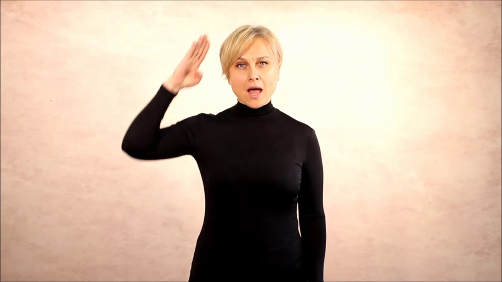
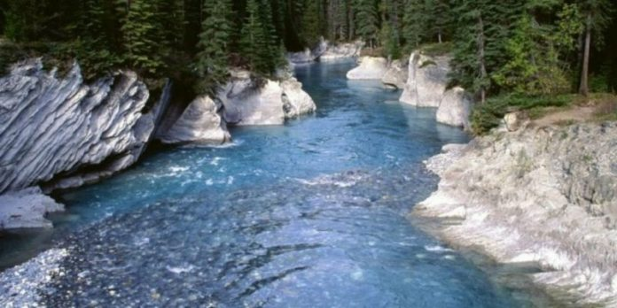

apă - Wikționar

apă
De la Wikționar, dicționarul liber Jump to navigation Jump to search ApăCuprins
1 română 1.1 Etimologie 1.2 Pronunție 1.3 Substantiv 1.3.1 Sinonime 1.3.2 Antonime 1.3.3 Cuvinte derivate 1.3.4 Cuvinte compuse 1.3.5 Locuțiuni 1.3.6 Expresii 1.3.7 Traduceri 1.4 Referințeromână
Etimologie
Din latină aqua .
Pronunție
AFI : /'a.pə/
Substantiv
apă f. Singular Plural Nominativ-Acuzativ apă ape Articulat apa apele Genitiv-Dativ apei apelor Vocativ apo apelor lichid incolor , fără gust și fără miros , compus hidrogenat al oxigenului , care formează unul din învelișurile Pământului . Beau apă minerală. masă de apă formând un râu , un lac , o mare etc. ( la pl. ) valuri , unde . ( fig. ) ( la pl. ) joc de culori făcut în lumină de unele obiecte lucioase . ( urmat de determinări ) denumire dată unor preparate lichide industriale , farmaceutice , de parfumerie etc. Apă de colonie. ( fig. ) denumire dată unor secreții apoase ale corpului ( lacrimi , salivă , sudoare etc.). Îmi curg apele .
Sinonime
2: pârâu , râu , fluviu , mare , ocean 6: transpirațieAntonime
aerCuvinte derivate
apar apos apăraie apătos apătoșa apșoarăCuvinte compuse
apă de clor apă deuterică apă de var apă grea apă minerală apă neagră apă oxigenată apă plată apă tare ape teritorialeLocuțiuni
Ca pe apă sau ca apa = în mod curgător , fluent ; pe dinafară .Expresii
Apă de ploaie = vorbe fără conținut, vorbe goale; (concr.) lucru fără valoare A bate apa în piuă = a vorbi mult și fără rost A fi ( toți ) o apă ( și un pământ ) = a fi la fel A intra la apă = a) (mai ales despre țesături) a-și micșora dimensiunile după ce a fost băgat în apă; b) (fam.) a ajunge într-o situație grea, neplăcută ( fam. ) A băga pe cineva la a pă = a face (cuiva) un mare neajuns A nu avea ( nici ) după ce bea apă = a fi extrem de sărac A ști (sau a vedea ) în ce ape se scaldă cineva = a cunoaște gândurile, intențiile sau dispoziția cuiva A lăsa pe cineva în apele lui = a nu deranja, a lăsa pe cineva în pace A nu fi în apele lui = a fi abătut sau prost dispus A-i veni (cuiva) apă la moară = a se schimba împrejurările în favoarea lui A-i lua (cuiva) apa de la moară = a-i crea (cuiva) condiții nefavorabile; a face să nu mai poată spune nimic A-i lăsa (cuiva) gura apă (după ceva) = a dori (ceva) nespus de mult A fi (numai o) apă = a fi foarte transpirat A se duce pe apa sâmbetei = a se duce de râpă
Traduceri
lichid incolor H 2 O afrikaans: water ( Afrikaans ) albaneză: ujë ( shqip ) f. aragoneză: aigua ( aragonés ) f. aromână: apã ( armãneashti ) f. asturiană: agua ( asturianu ) f. aimara: uma ( Aymar aru ) azeră: su ( azərbaycanca ) bambară: ji ( bamanankan ) bască: ur ( euskara ) birmaneză: yei ( မြန်မာဘာသာ ) bosniacă: voda ( bosanski ) bretonă: dour ( brezhoneg ) catalană: aigua ( català ) f. cebuană: túbig ( Cebuano ) cehă: voda ( čeština ) f. chineză: 水 ( 中文 ) (shuǐ) coreeană: 물 ( 한국어 ) (mul) cornică: dowr ( kernowek ) m. cornică: acqua ( corsu ) f. croată: voda ( hrvatski ) daneză: vand ( dansk ) engleză: water ( English ) esperanto: akvo ( Esperanto ) estoniană: vesi ( eesti ) faroeză: vatn ( føroyskt ) finlandeză: vesi ( suomi ) franceză: eau ( français ) f. friulană: aghe ( furlan ) friziană: wetter ( Frysk ) galeză: dwr ( Cymraeg ) galeză Manx: ushtey ( Gaelg ) galiciană: agua ( galego ) f. germană: Wasser ( Deutsch ) germană de jos: water ( Plattdüütsch ) greacă: νερό ( Ελληνικά ) (neró) n. guarani: y ( Avañe'ẽ ) hawaiiană: wai ( Hawaiʻi ) ido: aquo ( Ido ) indoneziană: air ( Bahasa Indonesia ) interlingua: aqua ( interlingua ) irlandeză: uisce ( Gaeilge ) islandeză: vatn ( íslenska ) italiană: acqua ( italiano ) f. iudeo-spaniolă: agua ( Ladino ) japoneză: 水 ( 日本語 ) ( みず , mizú) javaneză: banyu ( Jawa ) kurdă centrală: av ( kurdî ) latină: aqua ( Latina ) f. letonă: udens ( latviešu ) limburgheză: water ( Limburgs ) lituaniană: vanduo ( lietuvių ) m. lojban: djacu ( la .lojban. ) luxemburgheză: waasser ( Lëtzebuergesch ) maghiară: víz ( magyar ) malaieziană: air ( Bahasa Melayu ) malgașă: rano ( Malagasy ) malteză: ilma ( Malti ) maori: wai ( Māori ) nahuatl: atl ( Nāhuatl ) napolitană: acqua ( Napulitano ) f. nauruană: ebok ( Dorerin Naoero ) norvegiană: vann ( norsk ) occitană: aiga ( occitan ) f. papamiento: awa ( Papiamentu ) poloneză: woda ( polski ) portugheză: água ( português ) f. quechua: yaku ( Runa Simi ) vlax romani: panì ( romani čhib ) rusă: вода ( русский ) (vodá) f. samoană: vai ( Gagana Samoa ) sardă: àcua ( Campidanese ) f ( sardu ) , abba ( Nugorese ) f ( sardu ) sârbă: voda ( српски / srpski ) scoțiană: uisge ( Scots ) shona: mvura ( chiShona ) siciliană: acqua ( sicilianu ) sinhaleză: wathura ( සිංහල ) slovacă: voda ( slovenčina ) f. slovenă: voda ( slovenščina ) sorabă de sus: woda ( hornjoserbsce ) f. spaniolă: agua ( español ) f. sranan: watra ( Sranantongo ) suedeză: vatten ( svenska ) sundaneză: cai ( Sunda ) swahili: maji ( Kiswahili ) tagalog: túbig ( Tagalog ) tătară: su ( татарча/tatarça ) tătară crimeeană: suv ( qırımtatarca ) tigrinia: mai ( ትግርኛ ) tok pisin: wara ( Tok Pisin ) tonga: vai ( lea faka-Tonga ) tupinamba: 'y ( tpn ) turcă: su ( Türkçe ) turkmenă: suw ( Türkmençe ) volapük: vat ( Volapük ) valonă: aiwe ( walon ) xhosa: nzi amanzi ( isiXhosa ) zulu: nzi amanzi ( isiZulu )Referințe
DEX online Adus de la „ https://ro.wiktionary.org/w/index.php?title=apă&oldid=940560 ” Categorii : Română Substantive în română Lichide în română Băuturi în românăMeniu de navigare
Unelte personale
Nu sunteți autentificat Discuții Contribuții Creare cont AutentificareSpații de nume
Articol DiscuțieVariante
Vizualizări
Lectură Modificare IstoricMai mult
Căutare
Navigare
Pagina principală Portalul comunității IRC - chat live Discuții libere Schimbări recente Pagină aleatorie Ajutor DonațiiTrusa de unelte
Ce trimite aici Modificări corelate Încărcare fișier Pagini speciale Legătură permanentă Informații despre pagină Citează această paginăTipărire/exportare
Creare carte Descarcă PDF Versiune de tipăritÎn alte limbi
Azərbaycanca Беларуская Català ᏣᎳᎩ Čeština Dansk Deutsch Ελληνικά English Español Eesti Suomi Français Magyar Ido Íslenska Italiano 日本語 ಕನ್ನಡ 한국어 Kurdî Limburgs ລາວ Lietuvių Latviešu Malagasy Nederlands Norsk Occitan Polski Português Armãneashti Русский Тоҷикӣ ไทย Türkçe 中文 Ultima editare a paginii a fost efectuată la 16 ianuarie 2018, ora 22:20. Acest text este disponibil sub licența Creative Commons cu atribuire și distribuire în condiții identice ; pot exista și clauze suplimentare. Vedeți detalii la Termenii de utilizare . Politica de confidențialitate Despre Wikționar Termeni Versiune mobilă Dezvoltatori Statistics Cookie statement